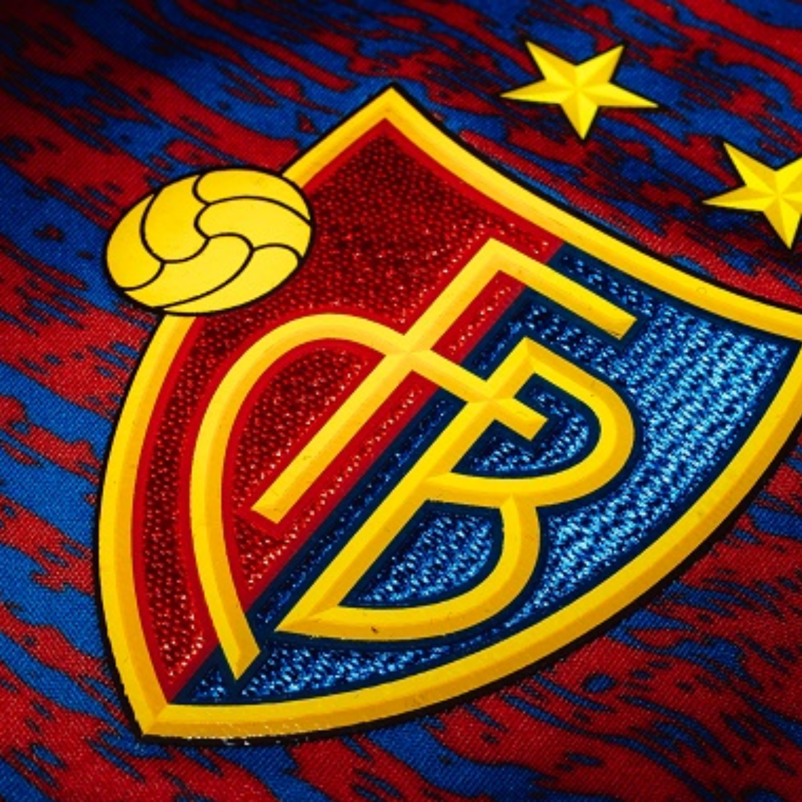

Über mich

Ich bin Melvin Trösch, Maturand an der Kantonsschule Sursee
Und ich habe diese Website als Teil meiner Maturaarbeit erstellt. Jeglicher Code wurde selbst programmiert. Den Zugang zum Programmieren habe ich aber eigentlich erst durch die Arbeit gefunden.
Du denkst, das hat bestimmt sehr viel Zeit gekostet und die ganze Freizeit in Anspruch genommen?
Ja, viel Zeit hat es gekostet. Daher würde ich Programmieren einer eigenen Website auch niemandem empfehlen, der kein besessener Coder ist. Aber die Freizeit durfte natürlich trotzdem nicht zu kurz kommen!
Ich bin leidenschaftlicher Mountainbiker und FC Basel-Fan
Neben Fussball schaue ich gerne verschiedenste Sportarten im Fernsehen. Doch am liebsten erkunde ich unseren Planeten mit all seinen Facetten. Daher kannst du mich in den Ferien genauso gut in einer Stadt, am Strand oder in den Bergen antreffen, aber selten zweimal am selben Ort.
Beweggründe für diese Arbeit
Bereits vor Beginn der Maturaarbeit stand für mich fest, dass ich ein Thema aus dem Fachbereich Informatik bearbeiten werde und mein Produkt eine Software sein wird. Ich habe schon immer gerne am Computer an verschiedenen Dingen getüftelt und will zukünftig auch ein Informatikstudium in Angriff nehmen. Speziell interessiert mich der Teilbereich der Cyber Security, also der Internetsicherheit. Zuerst wollte ich daher eine Analyse von verschiedenen Programmen zur Abwehr von Hackerangriffen machen. Da mein Vater ein eigenes Unternehmen besitzt, habe ich diesbezüglich auch schon einiges mitbekommen. Im Gespräch mit meinem Betreuer habe ich dann herausgefunden, dass dies im Rahmen einer Maturaarbeit nur oberflächlich angeschaut werden kann. Herr Gut schlug mir daraufhin vor, eine (oder mehrere) Verschlüsselungstechnik(en) mit Java umzusetzen. Dies hatte mich jedoch noch nicht vollends begeistert. Angetan war ich allerdings von der Idee der Erstellung einer eigenen Website mit JavaScript zum Thema Verschlüsselung. Der Data Encryption Standard (DES) faszinierte mich sehr und daher lehnt sich meine eigene Verschlüsselungstechnik auch daran an.